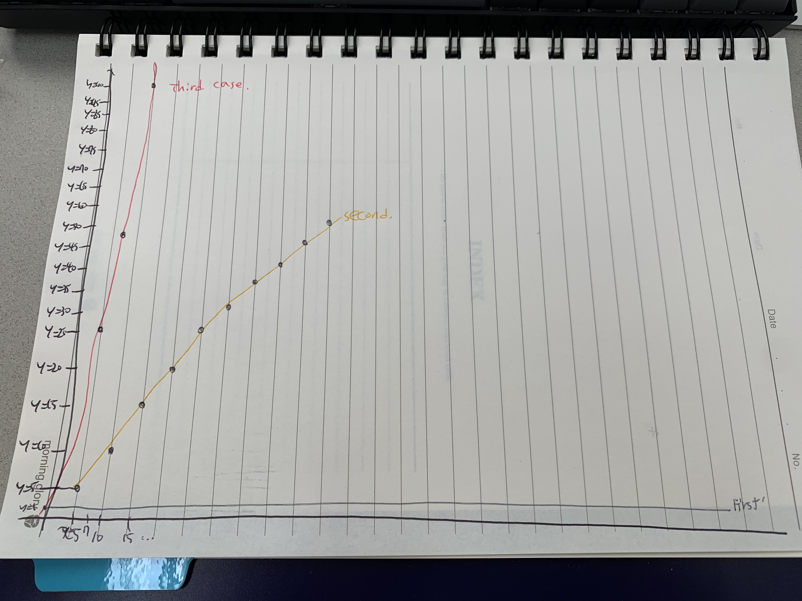

1. 개요
1-1. 알고리즘의 정의
컴퓨터의 거대하고 방대한 데이터의 문제를 해결하기 위해, 다양한 방법을 사용한다. 그것을 우리는 알고리즘이라고 그 과정 속에서 데이터가 변환되는 과정을 자료구조라고 일컫는다.
1-2. 알고리즘의 속도를 측정하는 방법
알고리즘을 측정하는 방법엔 크게 두가지가 있다.
- 실행시간 측정법:직접 소스코드를 구현하여 걸리는 시간을 측정하는 방법
- 알고리즘 복잡도 분석:직접 구현하지 않고 수학적 계산을 통해 유추하는 방법(시간복잡도와 공간복잡도 등이 있음)
2. 실험
2-1. 예제코드
예제코드 보기
실험대상:n을 n번 더하는 계산. (단, for루프 제어연산과 대입연산은 고려하지 않고, 컴퓨터 성능으로 인해 어지간한 계산은 차이가 잘 나지 않으니, 한번 연산 당 변수의 값을 올림(변수 second))
-
1.n*n
void firstcase(int randomNumber) {int second=0;int sum=randomNumber*randomNumber;second++;std::cout<<(sum);std::cout<<(second);} -
2.n을 반복문을 통해 n번 더함
void secondcase(int randomNumber) {int sum=0;int second=0;for(int i=0;i<randomnumber;i++){sum+=randomNumber;second++;}std::cout<<(sum);std::cout<<(second);} -
3.n을 이중반복문을 통해 1씩 증가시킴
void thirdCase(int randomNumber) {int sum=randomNumber*randomNumber;int second=0;for(int i=0;i<randomnumber;i++){for(int j=0;j<randomnumber;j++){sum++;second++;}}std::cout<<(sum);std::cout<<(second);}
2-2. 각 코드별 알고리즘 복잡도 및 예상 그래프
그래프 보기
-
첫번째 경우
값의 상관 없이 한번만 연산된다. O(1)
-
두번째 경우
값의 크기만큼 반복문이 돌며 연산된다. O(n)
-
세번째 경우
값의 제곱 크기만큼 반복문이 돌며 연산된다. O(n^2)
-
전체 보기
2-3. 각 코드별 소요시간
-
1.파이썬으로 엑셀 입력 프로그램을 통해 값 액셀에 저장
파이썬 코드 보기|CSV 파일 다운로드
-
2.나온 값으로 그래프를 직접 그려보기

2-4. 결론
알고리즘 복잡도 그래프에서 예측한 그래프와 실제 값을 통해 그려본 측정시간 그래프가 일치함을 확인함으로서, 두 방법 모두 옳다는 것을 확인함.
3. 느낀점
소스코드를 단순히 구현했을때는, 어떤 알고리즘이 더욱 빠르고 자원을 덜 잡아먹는지 고민하지 않았다. 하지만, 이번 수업을 통해 어떤 방식을 채택하느냐에 따라, 천차만별의 속도가 나오는 것을 확인하여, 나중에 무언가를 프로그래밍을 통해 구현하고자 할때, 이런 걸 알아두는 것이 더 좋은 프로그래머가 되기 위함 자질임을 알 수 있어 좋았다.